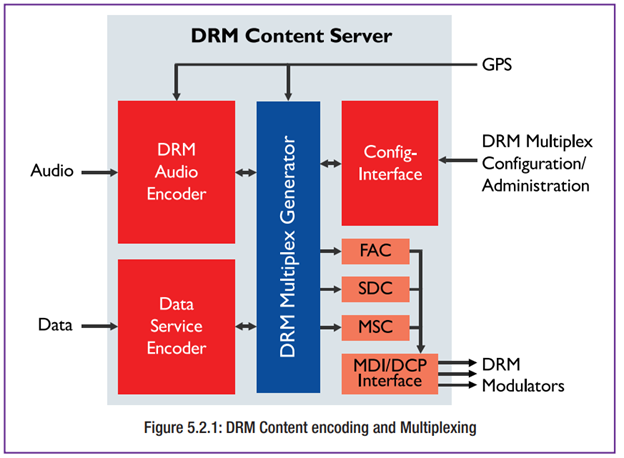

1.ข้อมูลเมตาในการออกอากาศ (Broadcast Meta-data)
ข้อมูลที่จำเป็น (Mandatory) จะระบุด้วยเครื่องหมาย {M}
1.1 รหัสบริการ (Service ID) {M}
- รหัสประจำแต่ละรายการ DRM ทั่วโลก
- ใช้สำหรับระบบ AFS เพื่อให้เครื่องรับค้นหารายการได้แม้เปลี่ยนคลื่น
- ไม่แสดงบนจอผู้ฟัง
- กำหนดโดยผู้แพร่ภาพ (หรือหน่วยงานระดับชาติ)
1.2 ชื่อรายการ (Service Labelling) {M}
- ข้อความสูงสุด 16 ตัวอักษร (UTF-8 สูงสุด 64 ไบต์)
- แสดงเป็นชื่อสถานีบนจอผู้รับ
- รองรับหลายภาษาและชุดอักขระ (ขึ้นอยู่กับผู้ผลิตเครื่องรับ)
- อาจรวมเลขความถี่เพื่อช่วยให้ผู้ฟังจดจำ
1.3 ประเภทของรายการ (Programme Type)
- ระบุประเภทเนื้อหา เช่น ข่าว ดนตรี ละคร
- เครื่องรับบางรุ่นสามารถกรองรายการตามหมวดหมู่ได้
- รองรับสูงสุด 29 ประเภท
1.4 ภาษาของรายการ (Service Language)
- กำหนดภาษาได้ด้วยรหัส ISO
- มีประโยชน์ในพื้นที่ที่มีหลายภาษา
- เครื่องรับสามารถแสดงเฉพาะรายการในภาษาที่ผู้ฟังต้องการ
1.5 ประเทศต้นทาง (Country of Origin)
- ระบุประเทศของ "สตูดิโอผลิตรายการ" ไม่ใช่สถานีส่ง
- ใช้รหัส ISO ประเทศ
- มีประโยชน์สำหรับผู้ฟังที่ต้องการติดตามข่าวจากประเทศบ้านเกิด
1.6 โลโก้สถานี (Station Logo)
- ส่งโลโก้เป็นส่วนหนึ่งของข้อมูล SPI
- ใช้แสดงบนจอสีในรถยนต์หรือเครื่องรับระดับสูง
- รองรับ 4 ขนาดภาพ ใช้แบนด์วิธต่ำ
2. เนื้อหาเสียง (Audio Content)
2.1 การเข้ารหัสเสียง (Audio Coding)
- ใช้ตัวเข้ารหัส MPEG xHE-AAC:
- ทำงานที่ 6 kbps สำหรับโมโน
- 12 kbps สำหรับสเตอริโอ
- รองรับเนื้อหาทั้งเสียงพูดและดนตรี
- ยังรองรับ AAC/HE-AACv2 สำหรับความเข้ากันได้ย้อนหลัง
- หากแบนด์วิดธ์เพียงพอ รองรับระบบเสียงรอบทิศทาง (5.1) โดยใช้ MPEG Surround
2.2 การเพิ่มประสิทธิภาพคุณภาพเสียง
- หลีกเลี่ยงการเข้ารหัส-ถอดรหัสหลายครั้ง (tandem coding)
- ปัญหาเกิดจากตัวเข้ารหัสในแต่ละขั้นอาจแปลผลผิดจาก artefact ที่เกิดจากขั้นตอนก่อน
- แนวทางที่ดีที่สุด:
- ใช้ต้นฉบับเสียงที่มีคุณภาพสูง
- เข้ารหัส DRM ที่ศูนย์กลาง เช่น สตูดิโอ
- ใช้โปรโตคอล MDI ในการส่งเสียงไปยังเครื่องส่ง เพื่อคงคุณภาพเสียงและควบคุมค่าการส่งระยะไกลได้
3. บริการเสริม (Value-added Services)
3.1 ภาพรวม
DRM รองรับบริการมัลติมีเดียและข้อมูลหลากหลาย เช่น:
- ข้อความรายการ (DRM Text)
- ข่าว, สภาพอากาศ, กีฬาแบบโต้ตอบ (Journaline)
- รูปภาพประกอบรายการ (Slideshow)
- ตารางผังรายการ (SPI/EPG)
บางบริการเช่น TPEG ออกแบบมาสำหรับระบบนำทางในรถยนต์ (machine-to-machine)
หมายเหตุ: ในโหมดความจุต่ำ (เช่น AM), บริการภาพควรใช้แบนด์วิดธ์รวมเพียง 2–4 kbps
3.2 ข้อความ DRM (DRM Text Messages)
- แสดงข้อมูลทันที เช่น ชื่อเพลง ข่าวสั้น หรือข้อมูลรายการ
- แสดงในรูปแบบ "scrolling text" บนจอรับฟัง
3.3 Journaline
- บริการข้อความโต้ตอบได้
- จัดหมวดหมู่ข่าว สภาพอากาศ กีฬา ฯลฯ
- ผู้ใช้สามารถเลือกหัวข้อที่สนใจได้
- รองรับหลายภาษา และใช้งานในระบบวิทยุแบบ Free-to-Air ได้
- เหมาะกับผู้ใช้ที่ต้องการเนื้อหาแบบ On-Demand โดยไม่ต้องเชื่อมต่ออินเทอร์เน็ต
3.4 ข้อมูลสถานีและรายการ (SPI – Service and Programme Information)
- คล้ายกับ EPG (Electronic Programme Guide)
- บอกตารางการออกอากาศ พร้อมข้อมูลรายการ
- ช่วยให้เครื่องรับ:
- แสดงข้อมูล
- บันทึกรายการล่วงหน้าได้ (หากรองรับ)
3.5 สไลด์โชว์ (Slideshow)
- แสดงรูปภาพประกอบรายการ เช่น ปกอัลบั้ม โลโก้สถานี หรือภาพข่าว
- ต้องใช้เครื่องรับที่มีหน้าจอสี
- ใช้แบนด์วิดธ์เล็กน้อย
3.6 TPEG
- บริการข้อมูลจราจรและการเดินทาง
- ใช้ในระบบนำทางอัจฉริยะ (M2M)
- ควบคู่กับ Journaline สำหรับผู้ใช้งานทั่วไป
4. ฟีเจอร์เตือนภัยฉุกเฉิน DRM (Emergency Warning Feature – EWF)
- DRM สามารถใช้เป็น ช่องสื่อสารสุดท้าย ในสถานการณ์ฉุกเฉิน เช่น ภัยธรรมชาติ
- สัญญาณวิทยุสามารถครอบคลุมพื้นที่ที่โครงข่ายอื่นล่มได้
4.2 หน้าที่
- แจ้งเตือนผู้ฟังอย่างทั่วถึงและทันเวลา
- ผสานเสียง, ข้อความ DRM, และ Journaline หลายภาษา
4.3 การทำงาน
- เครื่องรับสามารถ:
- เปิดขึ้นอัตโนมัติจากโหมดสแตนด์บาย
- สลับไปยังรายการเตือนภัย
- แสดงข้อความ, สัญลักษณ์เตือน, และเพิ่มระดับเสียงโดยอัตโนมัติ
4.4 การนำไปใช้งาน
- ใช้งานได้ในระดับท้องถิ่น ภูมิภาค หรือประเทศ
- ออกอากาศจากสถานีที่อยู่นอกพื้นที่ภัยพิบัติ
- เพิ่มความสามารถในการแจ้งเตือนแบบหลายภาษาและแสดงข้อมูลที่เจาะจงพื้นที่
